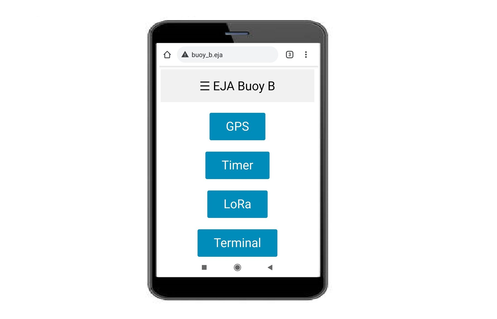
GUI for Buoy B | Hackaday Dream Team 2020
This project contains a GUI for the Buoy B PCB design. The microcontroller used in the PCB is the ESP32.
Step 1Define
What It Had to Do
In EJA's operating process, the fishers set the maximum time the gear will stay underwater, and the buoy is released when that time runs out (see the EJA project page). This interface is where that time is set on Buoy B, and it doubles as the board's test panel: GPS, LoRa and the internal messages each get a page.
- AccessWork from any phone or laptop browser, with no app and no router: the ESP32 runs its own Wi‑Fi access point
- AddressOpen by a name, www.buoy_b.eja, instead of an IP address
- TimerSet, show and cancel the release countdown, up to 23 h 59 min 59 s
- MonitorShow live GPS data, LoRa traffic and the board's internal messages
- LinkExchange GPS and timer messages with the Onboard Gateway over LoRa at 915 MHz, one message a second
- UpdateTake new firmware over Wi‑Fi (over‑the‑air updates)
Step 3Build
Libraries & Tools
- ESP32 Add-on in Arduino IDE
- ESPAsyncWebServer
- AsyncTCP
- SPIFFS File System
- ESP32 Async Over The Air
- TinyGPSPlus
- LoRa
Wi‑Fi Access Point & DNS
The ESP32 creates an Asynchronous Web Server, with the following credentials:
const char* ssid = "EJA_Buoy_B";
const char* password = "123456789";
With those credentials it is possible to access the WiFi network.
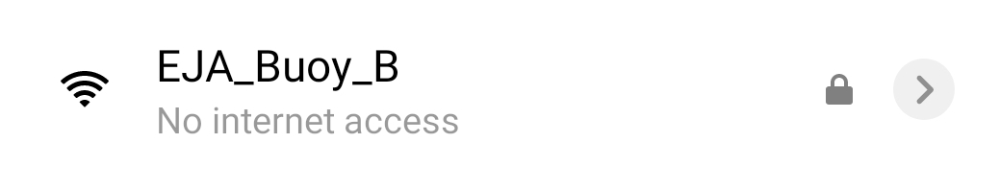
Wifi network.
The ESP32 creates a Domain Name System (DNS) to assign a domain name to the web server. That means that it is not necessary to know the server IP, it is possible to access the web server using the defined domain name for the host, in this case, the name is:
const char* host = "www.buoy_b.eja";
Once the device (phone/computer) is connected to the server (EJA_Buoy_B), open a browser and visit the following url:
http://www.buoy_b.eja/
Home
The previous link displays the web page used for HOME:
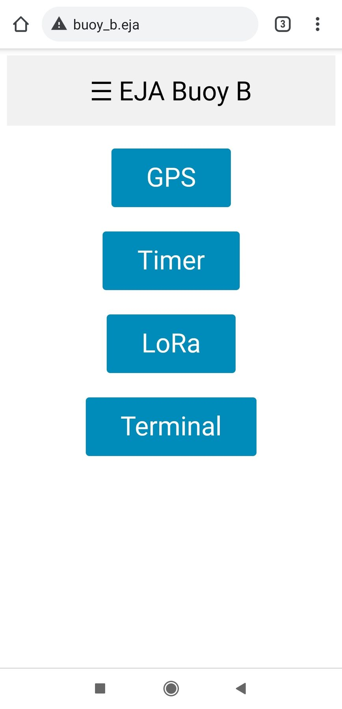
Home Screen.
There is a header with the name "EJA Buoy B" that opens a sidebar with links to the different test functionalities. It is also possible to access those pages using the buttons in HOME.
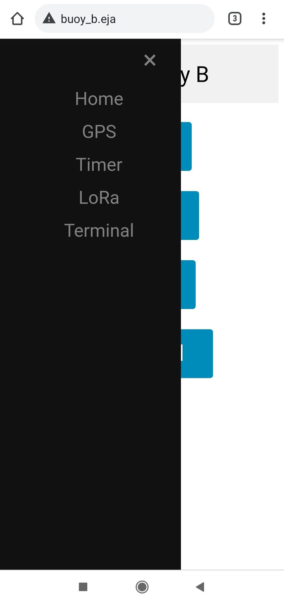
Side Menu.
GPS
The page http://www.buoy_b.eja/gps shows the data from the GPS module.
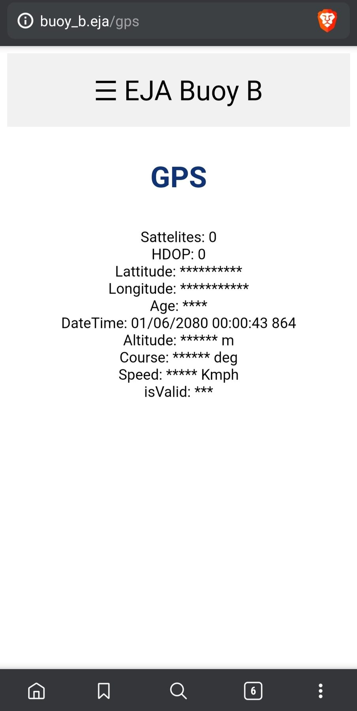
GPS Screen.
Timer
The page http://www.buoy_b.eja/timer shows the interface to create a timer in the Buoy. The timer represents a countdown that activates the release mechanism when the time has reached zero. The initial page allows the user to set the timer.
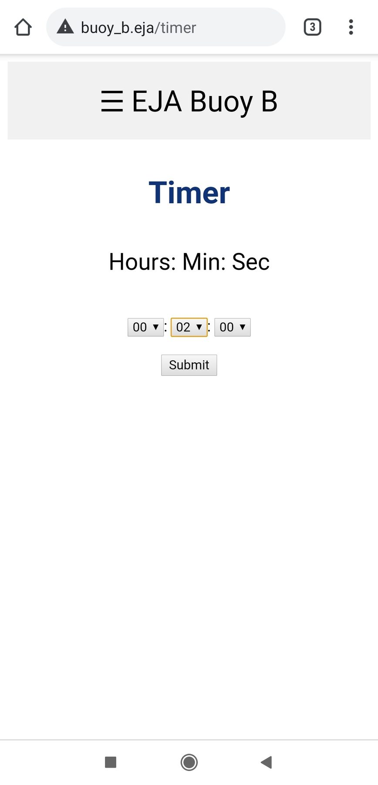
Timer Screen.
After selecting the amount of time the user has to click the Submit button. That will create the timer, the interface displays the countdown to the user.
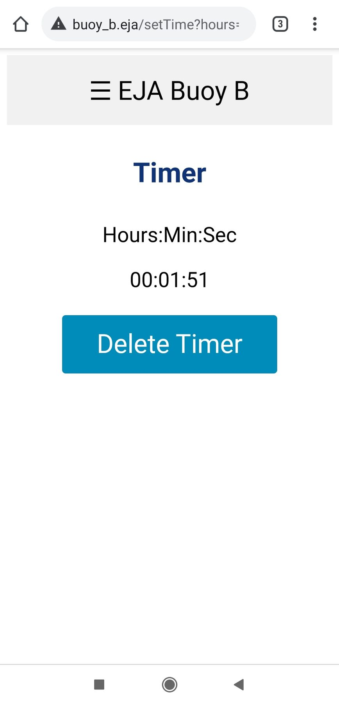
Remaining time.
When the timer reaches zero, the Buoy activates the release mechanism.
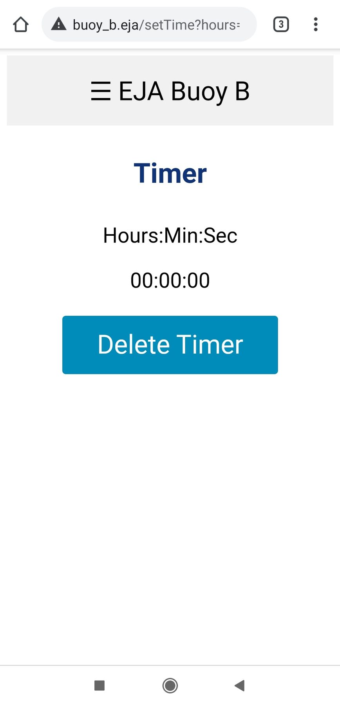
Screen when the timer reaches zero.
The user can delete the timer at any time clicking the button Delete Timer. When the user deletes the timer, it is possible to create a new one and restart the process.
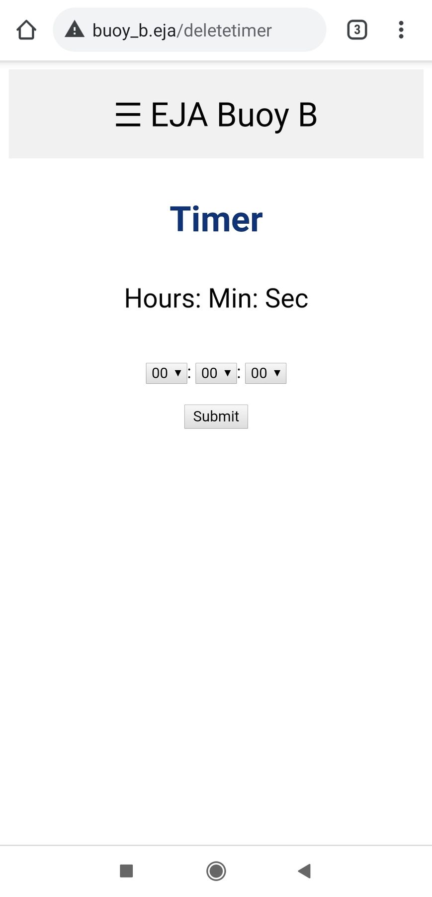
Screen after the timer is deleted.
LoRa
The page http://www.buoy_b.eja/lora shows internal messages related to LoRa. In the ESP32 that information is stored in the variable:
String lora_all_msg = "";
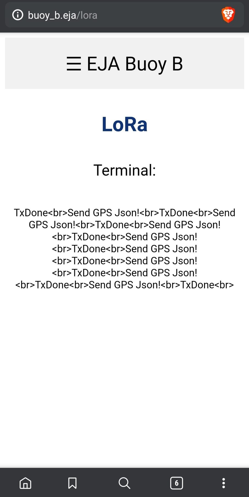
LoRa Screen.
Terminal
The page "http://www.buoy_b.eja/terminal" shows internal messages. In the ESP32 that information is stored in the variable:
String terminal_messages = "";
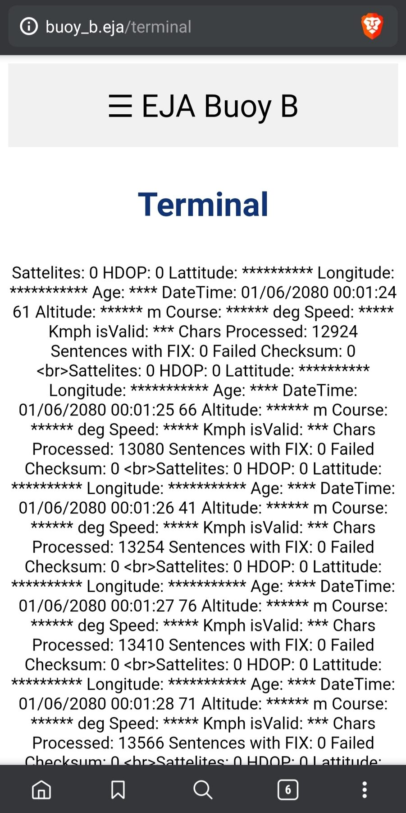
Terminal Screen.
Step 4Test
Bench Check
The Terminal screenshot doubles as a GPS bring‑up check. The module's serial stream was arriving cleanly: one line per second, “Chars Processed” climbs from 12,924 to 13,566 in four seconds with 0 failed checksums (the firmware adds “No GPS data received: check wiring” to the terminal when fewer than 10 characters have arrived after 5 s). But the receiver had no fix: 0 satellites, 0 sentences with a fix, and no latitude or longitude.
The LoRa link is confirmed from the other end. The Onboard Gateway's link check shows its GPS page displaying a buoy GPS message received over LoRa, and its timer starting only after the buoy echoed the end time back — the reply this firmware sends in its timer message.
Step 5Refine
Future Improvements
For more information about the recommended future improvements for the electronic design visit the following post.
The electronics were carried forward in 2021: EJA M replaces the Buoy B board, together with Buoy A and the Onboard Gateway, with a single PCB.
One item is still open in this firmware: the release itself. When the countdown reaches zero the sketch sets its timer_reached_end flag, but the block meant to drive the release actuator is still empty (// Activate release mechanism). The countdown, the web interface and the LoRa reporting are done; the final output to the actuator is not.
Posted In:
Embedded Software